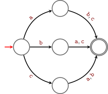
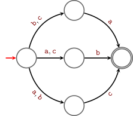
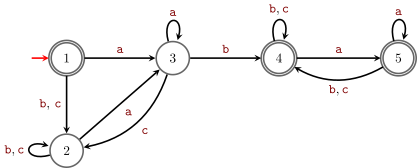
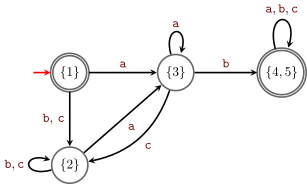

11 Minimization of DFAs
In this chapter we see minimization algorithms for DFAs, that is algorithms that given as input a DFA A find the1 DFA B with the smallest number of states possible s.t. \mathscr{L}(B)=\mathscr{L}(A).
- Example 11.1: fixed a bug in the proof (22/09/2026)
Sipser (2013) leaves the minimization of DFAs as an exercise. A reference for this chapter is Hopcroft et al. (2007, sec. 4.4).
Notice that the minimal DFA accepting a language is unique, but in general there is not a unique minimum NFA accepting a language.
Example 11.1 We give an example of a language L and two non-isomorphic minimal NFAs accepting L. Let L=\{\textcolor{darkred}{\mathtt{ab}},\textcolor{darkred}{\mathtt{ba}},\textcolor{darkred}{\mathtt{bc}},\textcolor{darkred}{\mathtt{cb}},\textcolor{darkred}{\mathtt{ac}},\textcolor{darkred}{\mathtt{ca}}\}.


It should be clear that both NFAs accept L and that they are not isomorphic.
What is not obvious is that there is no NFA with 4 or less states accepting L.
One interesting property of DFAs is that for DFAs an analogoue of the previous Example 11.1 cannot happen! All minimum DFA accepting a given language are ismorphic. For this reason we refer to the minimum DFA accepting a given language.
11.1 The minimum DFA (formal definition)
Given a DFA A=(Q,\Sigma,\{q_0\},F,\delta), to find the minimum DFA for \mathscr{L}(A), first remove all unreachable states from the initial state q_0: those are clearly redundant. For simplicity of notation let’s call again A the DFA obtained after removing all those unreachable states.
We say that two states q,q'\in Q are equivalent (q\sim q') if \mathscr{L}(A_q)=\mathscr{L}(A_{q'})\ , \tag{11.1}
where A_q is the DFA obtained from A marking the initial state of A as a normal state and taking as new initial state q (and similarly for A_{q'}). If q\not\sim q', that is if \mathscr{L}(A_q)\neq\mathscr{L}(A_{q'}), we say that q and q' are distinguishable.
If q and q' are equivalent, then they behave in the same way w.r.t. acceting or not words and hence can be identified. That is, if in A the states q and q' are equivalent, then q' can be safely removed re-routing all incoming transitions to q.
Let [q] be the set of all states equivalent to q, that is [q]=\{q'\in Q :\mathscr{L}(A_q)=\mathscr{L}(A_{q'})\}\ . Let \min(A)=(Q',\Sigma,I',F',\delta') be the DFA that has
- Q'=\{[q] :q\in Q\},
- I'=\{[q_0]\}, where q_0 is the initial state of A,
- F'=\{[q] :q\in F\}, where F are the final states of A,
- \delta':Q'\times \Sigma\to Q' where \delta'([q],\textcolor{darkred}{\mathtt{s}})=[\delta(q,\textcolor{darkred}{\mathtt{s}})]\ .
It turns out that \min(A) is the minimum DFA equivalent to A, i.e. A and \min(A) accept the same language and \min(A) has the smallest number of states possible among the DFAs equivalent to A.
Theorem 11.1 For each DFA A, the DFA \min(A) constructed above has the following properties:
- \mathscr{L}(A)=\mathscr{L}(\min(A));
- no DFA with strictly less states than \min(A) accepts \mathscr{L}(A);
- all DFA with the same number of states of \min(A) are isomorphic to \min(A).
We don’t see the proof of this result in this course (it is a consequence of the Myhill-Nerode Theorem), but we leave as an exercise to check the first part of it.

Exercise 11.1 Prove that for DFAs A and \min(A) as defined above, A and \min(A) accept the same language.
The main difficulty in computing the minimum DFA is to compute Q', that is the partition of the states of Q induced by the equivalence. In the next couple of sections we see two algorithms to compute \min(A).
Finding a minimum DFA equivalent to a given DFA is a different task than, given a DFA show that it is minimal. For example, if you just want to prove minimality sometimes it is easier/faster to construct a fooling set (see Section 14.1).
11.2 Moore’s minimization algorithm
For every q\in Q we want to compute [q]. Moore’s minimization algorithm is a partition refinement algorithm that computes the equivalence \sim starting with a very coarse partition of Q and then refining it until reaching \sim.
Exercise 11.2 (🌱 Trivial cases) Given a DFA A=(Q,\Sigma,I,F,\delta), what is the minimum DFA equivalent to A if
- F=\emptyset?
- F=Q?
In the rest of the section consider fixed a DFA A=(Q,\Sigma,\{q_0\},F,\delta) to minimize and assume \emptyset\subsetneq F\subsetneq Q (otherwise as seen in Exercise 11.2 the minimization is trivial), also assume that all states in Q are reachable from q_0.
The idea to find the equivalence classes of \sim, that is all states that are distinguishable from each other, is to start approximating \sim with finer and finer partitions corresponding to states distuinguishable with words up to length 0,1,2,\dots
Formally, let \mathscr{L}(A)_{\leq k} be the words of length at most k accepted by A. We say that q and q' are k-equivalent (q\sim_k q') if
\mathscr{L}(A_q)_{\leq k}=\mathscr{L}(A_{q'})_{\leq k}\ , \tag{11.2}
where A_q is the DFA obtained from A marking the initial state of A as a normal state and taking as new initial state q (and similarly for A_{q'}). Similarly as before let [q]_{k}=\{q'\in Q:q'\sim_k q\}, that is [q]_{k} is the set of all states k-equivalent to q.
The equivalence classes of \sim_0 give a partition \pi_0=\{[q]_0:q\in Q\}\ .
What is \pi_0? The states that can be distinguished with words of length 0 (that is \varepsilon), in other words the final vs the non-final states. That is \pi_0=\{F,Q\setminus F\}.
Then we want to compute \pi_k=\{[q]_k:q\in Q\} for k=1,2,3,\dots
At each step the new partitions get finer and finer, and since the finest possible partition of Q is the one that has each vertex separately, the process must stabilize, that is there must exist a k s.t. \pi_k=\pi_{k+1}. This partition is the one we want, the one corresponding to the states of \min(A).
Theorem 11.2 If \pi_k=\pi_{k+1}, then \pi_k=\{[q]:q\in Q\}.
The idea of the algorithm is hence to compute the equivalence classes of \sim_0, \sim_1, etc. When it stabilizes this gives the equivalence classes of \sim. The following exercise shows a way to compute \sim_{k+1} from \sim_k.
Exercise 11.3 Show that q\sim_{k+1}q' if and only if q\sim_k q' and for each \textcolor{darkred}{\mathtt{s}}\in \Sigma, \delta(q,\textcolor{darkred}{\mathtt{s}})\sim_k \delta(q',\textcolor{darkred}{\mathtt{s}}).
Let \Sigma=\{\textcolor{darkred}{\mathtt{s_1}},\dots,\textcolor{darkred}{\mathtt{s_k}}\} and let Q=\{1,\dots,n\}. We see a partition over Q as a vector \pi\in\{1,\dots,k\}^n where all the numbers between 1 and k appear at least once in \pi. Two states q and q' are in the same set of the partition if and only if \pi[q]=\pi[q'].
Example 11.2 If n=5 the vector \pi=(1,2,3,1,3) gives the partition where the vertices 1 and 4 are in the same set, no other vertex is in the same set with 2, and 3 and 5 are in the same set.
The first partition \pi_0 of Q is given by accepting and non-accepting states:
\pi_0=(b_1,\dots,b_n)\ , where b_i=1 if q\in F and otherwise b_i=2.
In this section we use a couple of non-standard notations. For a partition \pi of the vertices of Q and q\in Q,
- let \pi[q] be the unique set in \pi containing q.
- let the signature of q be s[q,\pi]=(\pi[q],\pi[\delta(q,\textcolor{darkred}{\mathtt{s_1}})],\dots,\pi[\delta(q,\textcolor{darkred}{\mathtt{s_k}})]), that is s[q,\pi] is a vector containing as first entry the name of the set in the partition \pi containing q, and then the names of the sets in \pi containing the vertices \delta(q,\textcolor{darkred}{\mathtt{s_1}}),\dots,\delta(q,\textcolor{darkred}{\mathtt{s_k}}).
If s[q,\pi]\neq s[q',\pi] it means that either q and q' do not belong to the same set of \pi or that there exist a symbol \textcolor{darkred}{\mathtt{s_i}}\in \Sigma s.t. \delta(q,\textcolor{darkred}{\mathtt{s_i}}) and \delta(q',\textcolor{darkred}{\mathtt{s_i}}) do not belong to the same set of \pi. In either case q and q' cannot be equivalent.
The idea is to keep refining the partition using the signature to mark states that cannot be equivalent until the partition stabilizes. When the partition does not change anymore we found the partition induced by \sim, and stop the procedure.
Example 11.3 We continue Example 9.6 finding now the minimal DFA equivalent to the one found in that exercise. For convenience we re-draw that DFA A here (renaming the states):

This gives as minimum DFA equivalent to A:

Example 11.4 Let’s compute \min(A) when A is the DFA given by the following table:
| \textcolor{darkred}{\mathtt{0}} | \textcolor{darkred}{\mathtt{1}} | |
|---|---|---|
| 0 | 1 | 5 |
| 1 | 6 | 2 |
| 2 | 0 | 2 + |
| 3 | 2 | 6 |
| 4 | 7 | 5 |
| 5 | 2 | 6 |
| 6 | 6 | 4 |
| 7 | 6 | 2 |
Exercise 11.4 Consider the language L=\{w \in \{\textcolor{darkred}{\mathtt{0}},\textcolor{darkred}{\mathtt{1}}\}^* :\mathtt{value}_2(w)\in 3\mathbb N\} In Exercise 10.3 you constructed a DFA A accepting L. Check whether the A you constructed is minimal using the Moore’s minimization algorithm.
11.3 Minimization Brzozowski’ style
There is a very neat way to compute the minimum DFA equivalent to a given one due to Brzozowski. He noticed that to compute the minimum DFA equivalent to a given one you only need to know the determinization construction (from Theorem 9.2) and how to construct a DFA for the reverse language (that is inverting the direction of the transitions and exchanging the role of initial and final states).
We already saw some results by Brzozowski’s in Section 8.2.
Given an NFA A, let D(A) the DFA computed using the powerset construction from the proof of Theorem 9.2 without writing down states unreachable from the initial one.
Given a DFA A=(Q,\Sigma,\{q_0\},F,\delta), let R(A) be the following NFA: R(A)=(Q,\Sigma,F,\{q_0\},\delta'), where for each \textcolor{darkred}{\mathtt{s}}\in \Sigma and q,q'\in Q, (q',\textcolor{darkred}{\mathtt{s}},q)\in \delta' if and only if \delta(q,\textcolor{darkred}{\mathtt{s}})=q'. In other words, R(A) is the same as A but with the directions of the transitions reversed and with final and initial states exchanged. We have that R(A) accepts the language \mathscr{L}(A)^R (this was one of the NFAs you were asked to construct in Exercise 9.5).
Theorem 11.3 (Brzozowski’s minimization algorithm) Given a DFA A, the minimum DFA accepting \mathscr{L}(A)^R is D(R(A)). And hence, as a consequence, the minimum DFA equivalent to A is D(R(D(R(A)))).
We don’t see the proof of this result and only leave a special case as an exercise.
Exercise 11.5 Show that if R(A) is a DFA, then it is minimum.
Exercise 11.6 Give an example of DFA A where the running time of the algorithm given by Theorem 11.3 is exponential in the number of states of A.
Exercise 11.7 Consider the language L=\{w \in \{\textcolor{darkred}{\mathtt{0}},\textcolor{darkred}{\mathtt{1}}\}^* :\mathtt{value}_2(w)\in 3\mathbb N\} In Exercise 10.3 you constructed a DFA A accepting L. Check whether the A you constructed is minimal using the technique of Theorem 11.3.
The DFA B is unique up to renaming of the states.↩︎